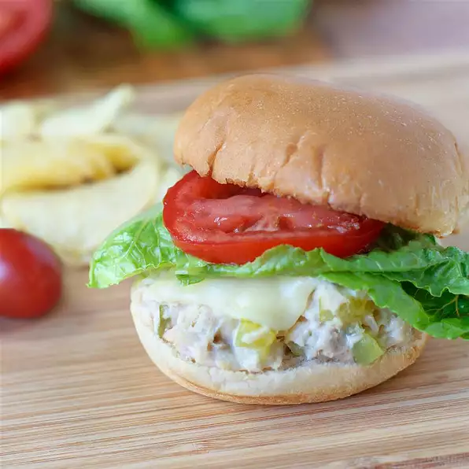

Cheesy Tuna Melts

Description
A great quick snack for hungry people in a hurry. Crisp muffins, creamy tuna salad and bubbly melted cheese on top.
Ingredients
- 1 (5 ounce) can tuna, drained
- ⅓ cup chopped celery
- 2 tablespoons mayonnaise
- 1 pinch salt
- 4 English muffins, split and toasted
- 8 slices ripe tomato
- 8 slices Cheddar cheese
Steps
- Preheat oven to broil
- In a bowl, mix together tuna, celery, mayonnaise and salt. Spread tuna mixture onto the toasted muffin halves and place them on a baking sheet. Top each half with a slice of tomato and a slice of cheese
- Broil until cheese is melted, about 3 to 5 minutes.